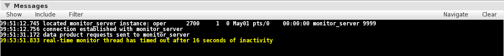
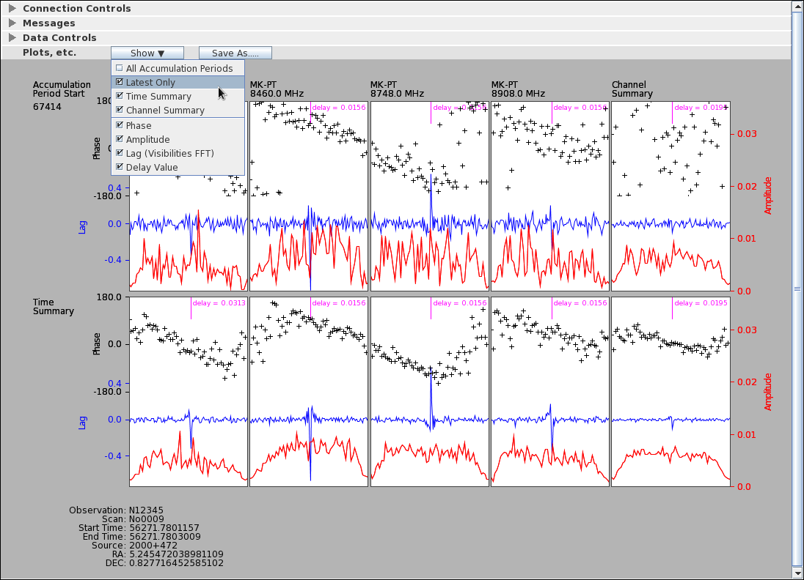

For real-time monitoring to work on a running job, it must be
started with real-time monitoring enabled. This is done by
checking the "Run With Monitor" check box on the Run Controls panel in the Job Control Window:

The Job Monitor is controlled and monitor data are displayed
through the Job Monitor Window. Each instance of this window
is assigned to a single job. There are two ways to start the
Job Monitor for a given job:
The Connection Controls panel displays the name of the system
hosting monitor_server, the TCP port used by guiServer
to communicate with it, a connection light showing the quality
of the TCP connection to monitor_server, and a
real-time display showing data received by the GUI. The
design of this panel is anticipating a more flexible monitor_server
scheme - for the moment the controls do not function and the
plot and connection light are not terribly useful (although
you can seen data transfers on the plot, which has some
value).

The Messages panel shows messages, most of which originate with guiServer, that are specific to the Real-Time Monitor. Like all DiFX GUI message windows, informational messages are displayed in white text, warnings are yellow, and errors are red. Standard message window controls for clearing items, displaying different message types, and limiting the buffer of messages are provided.

The above message, which sounds rather alarming, is not
something to be worried about if it occurs after a job
has completed running. This message originates in the
monitoring thread that guiServer creates to watch for
data output from each running job. The nature of monitor_server
(the process that collects data from DiFX and distributes
it to monitors such as guiServer) does not in any
obvious way allow guiServer's thread to know that a
job is done. To prevent the thread from running forever
and consuming resources (an idle thread has little
computational overhead, but the real-time monitor threads
gobble memory that should be freed), the thread creates a
timeout modeled on the rate at which it receives real-time
data from monitor_server. When the timeout is
exceeded the thread assumes there are no more data and
terminates itself, in the process producing this message.
The Data Controls Panel allows you to select the "data products"
you are interested in monitoring during processing. DiFX
produces a large number of data products, one for each combination
of possible auto- and cross-correlations, baselines, frequencies,
polarizations, etc. The Data Controls Panel allows any
number of these products to be selected for real-time
monitoring. After parsing the .input file
associated with a job, buttons that correspond to the product
specifications for that job are provided:


When running a job, DiFX provides real-time data each time it
completes processing of an accumulation period. These data
are plotted for each data product requested as they arrive.
Depending on what you request for display (see below), columns of
plots may be drawn for each data product (channel) requested, with
rows representing accumulation periods. Summaries across
channels (in a final column) and across accumulation periods (in a
final row) may also appear. To facilitate comparison among
plots, all are drawn with the same data limits which are computed
to accommodate the most extreme data points (which you may not
even be drawing, depending on you selections).
The pull-down menu under the "Show" button on the Plots Panel
allows you to change the content of the plots drawn as well as
which plots are drawn through a series of check boxes. These
settings do not alter the data collected - everything is collected
at all times - so you can change what you are looking at to suit
your needs at any time.

The check boxes under the "Show" menu are described
below:
All Accumulation Periods
Selecting "All Accumulation Periods" will produce a row of plots for each accumulation period collected. A column corresponding to each channel will be included. Selecting this check box will turn off the "Latest Only" check box (see below) if it is on, but the two boxes are not quite "radio boxes" in that they can both be off (but they cannot both be on).
Latest Only
This selection will draw a row of plots for only the latest accumulation period. As new data arrive, the row will be replaced with new plots representing the new data. This produces a far less busy screen of plots than with "All Accumulation Periods" selected.
Time Summary
"Time Summary" plots produce a row that represents the mean of each channel's data over all accumulation periods collected.
Channel Summary
"Channel Summary" plots produce a column containing the means of all of the channel data in each accumulation period. If both "Channel Summary" and "Time Summary are selected a "cross summary" plot will also be created.
Phase
Selecting "Phase" will produce scatter plots of the phase information derived from the visibility data. There are 64 phase points in each plot.
Amplitude
"Amplitude" will plot the amplitude of the visibility data. There are 64 points in each plot.
Lag
"Lag" plots the FFT of the visibility data (128 points per plot).
Delay
"Delay" computes a single value for delay but finding the peak (maximum absolute value) in the lag data and computing the offset from the data center using the bandwidth of the channel. The delay is plotted as a single line (indicating the position of the peak channel) and the computed value.
The "Save As..." button is used to create an Encapsulated
PostScript file of the screen content which can be saved wherever
the user wants using a popup (Java) file chooser. The
Encapsulated PostScript can be embedded in documents, saved for
comparison, emailed, or printed.

The saved PostScript representation is (almost) identical to the
screen (there are some font scaling differences and the background
is a different color) as it exists at the time the "Save" button
in the file chooser is pressed. If a job is still running
while you are selecting a file name, the screen could very well
change as additional data arrive. This may or may not be
what you want.
Both the "Time Summary" and "Latest" plots are actually the last
in a saved history of plots collected from the start of the
job. You can view this history by spinning the mouse wheel
over the Plot Panel while these plots are being displayed.
The "Latest" plot will step through the plots for all collected
accumulation periods, while the "Time Summary" plot will show the
data means as they stood after the collection of data for each
accumulation period (you can watch the signal to noise ratio go up
as you step later in time and the means are computed from more
data).
What good is this? It might show you alarming things about
your data, such as a delay value that is not consistent through
time. Or it may make outliers in the data more
obvious. Other than that, it looks kind of slick.
The real-time monitor is a somewhat experimental feature at this
time. Hopefully any problems it generates will have impacts
limited to itself, but it may cause the GUI and guiServer
to be less reliable than otherwise. Which is to say, if it
crashes things don't be completely shocked.
The nature of monitor_server limits real-time monitoring
to a single job at a time. The GUI can easily run multiple
jobs simultaneously, but doing so will completely confuse
real-time monitoring (the reason for this is that data products
are identified by monitor_server using only a single
number, without identifying the .input file source or which job
the number applies to - this may be fixed in the future) and may
well cause guiServer to crash. You can avoid
this problem by running each DiFX job using a different head
node - i.e. with a different instance of guiServer.
This capability has not been extensively tested.
The production of real-time data can be computationally
intensive. Each "product" requested requires the guiServer
host to run Fourier transforms on the fly as well as cause network
traffic to transfer the data to the GUI. There is no effort
made to limit the number of products a user can request, nor has
an obvious impact on performance been observed in testing, but it
should be kept in mind that the GUI can be instructed to collect a
very large number of products for most jobs. Viewing these
data in real time would probably not be illuminating (they would
crowd the display with too many plots), but nothing will stop you
from doing so. Be sensible about this.
Yes, as long as a job was started with the "Run With Monitor"
check box selected (see above), monitor_server
should have access to that job. It should even be possible
to monitor a job started by another user, assuming you have access
to the .input file associated with it.
At the moment the real-time monitor is designed to monitor the
output of a single scan. If a job has more than one scan,
the monitor will essentially mash them together as if they were
one. It should work, but labels will likely be confusing
and/or wrong, and summary plots will make little sense. An
extension of the current design to handle multiple scans
gracefully is in the works.